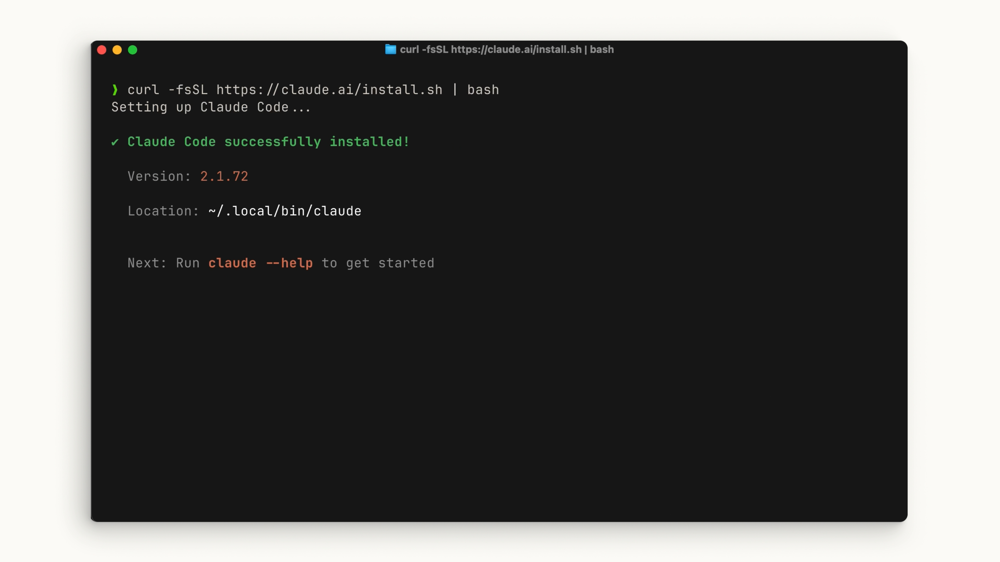
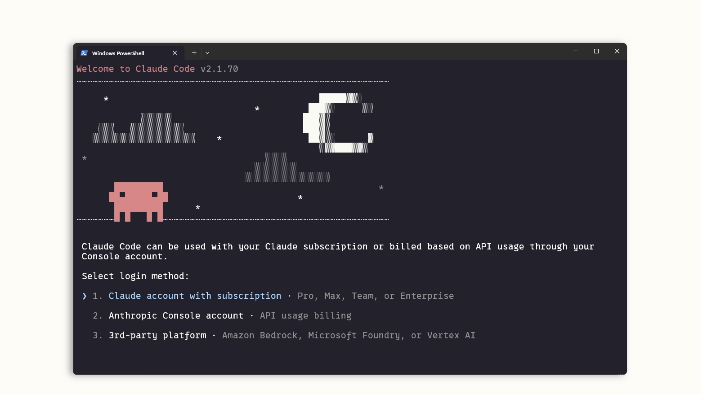
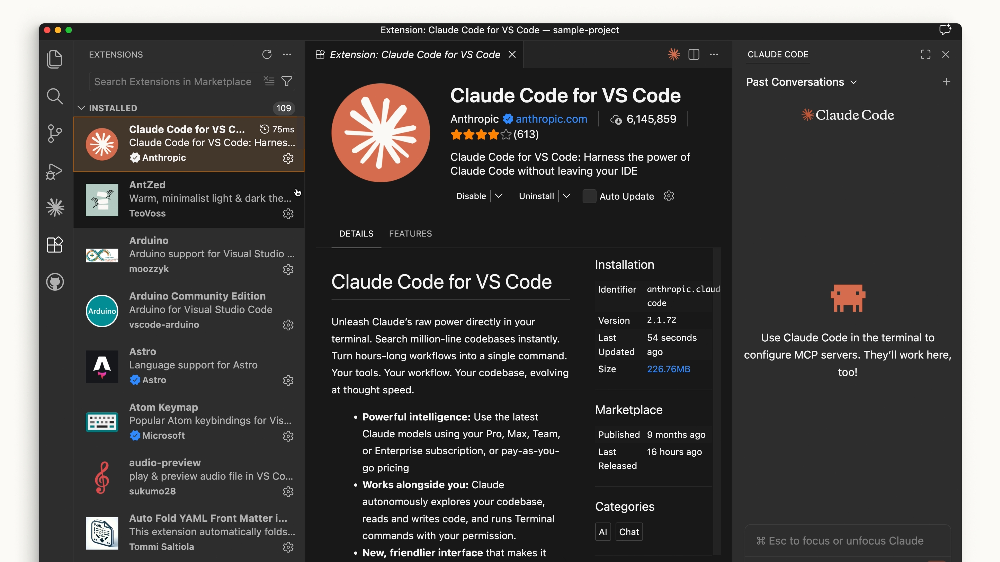
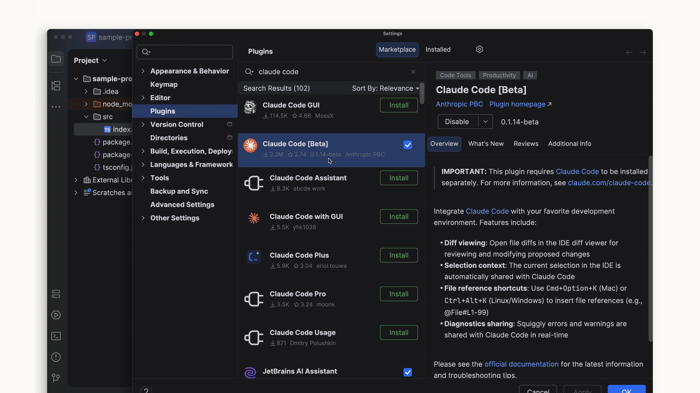
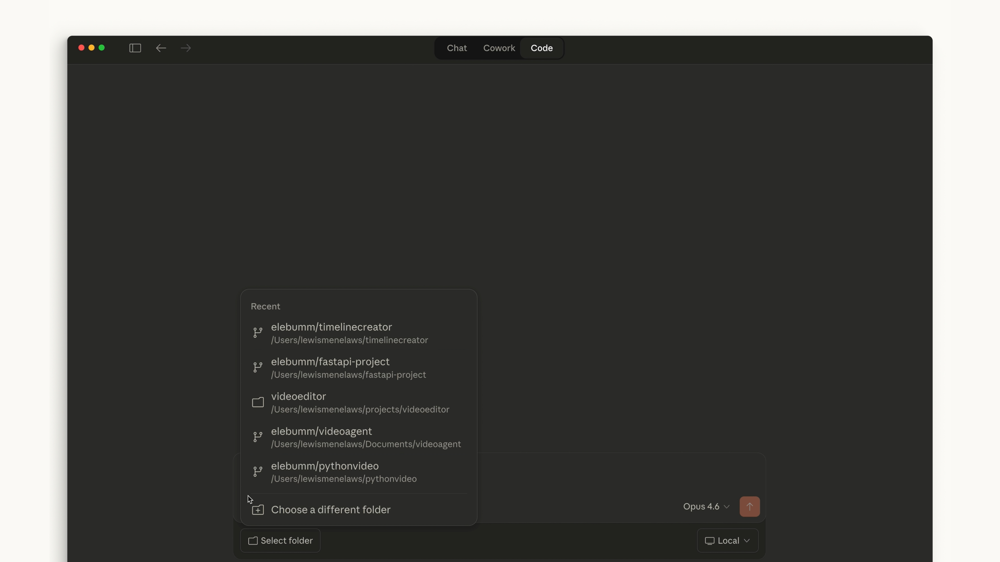
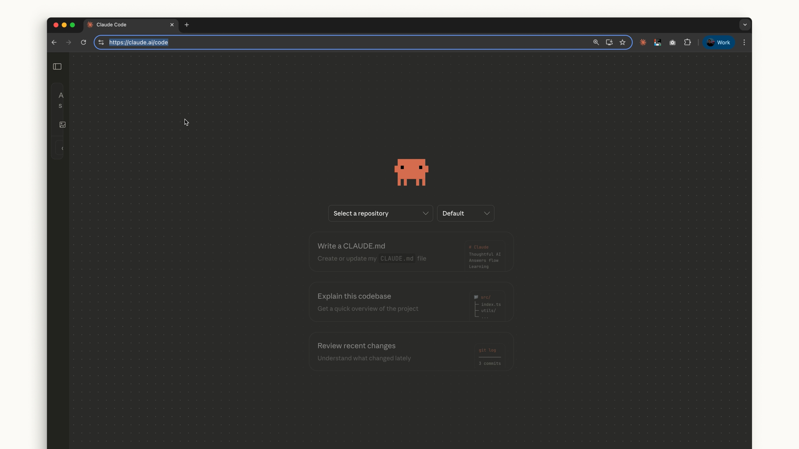

Claude Code는 터미널, 웹, IDE 어디에서 사용하든 간단하게 설치할 수 있습니다.
터미널
macOS, Linux, 또는 WSL에서는 curl 명령어를 사용하여 한 번에 설치할 수 있습니다. Homebrew를 선호한다면 brew install을 사용할 수도 있지만, 이 방법은 자동 업데이트를 지원하지 않습니다.
Windows에서는 몇 가지 옵션이 있습니다. PowerShell에서는 Invoke-RestMethod 명령어를 사용하세요. CMD에서는 curl 명령어를 사용하세요. winget 명령어도 사용 가능하지만, Homebrew와 마찬가지로 자동 업데이트가 되지 않습니다.

설치 후 claude 명령어를 실행할 수 있어야 합니다. 실행되지 않으면 터미널을 재시작하세요. 프로젝트 디렉토리로 이동한 후 다음을 실행하세요:
claude색상 테마 선택, Claude 계정(Pro, Max 또는 Enterprise)으로 로그인하거나 API 키를 사용하는 등 초기 설정 단계를 거치게 됩니다. 조직에 Claude Enterprise 계정이 있다면 해당 옵션을 선택하세요.

claude를 실행하는 디렉토리가 어디든, 해당 디렉토리와 모든 하위 폴더에 접근할 수 있습니다.
Visual Studio Code
확장 프로그램 패널을 열고 "Claude Code"를 검색하세요. 파란색 인증 체크 표시가 있는 Anthropic의 확장 프로그램을 찾아 설치하세요.
설치 후 VS Code를 재시작해야 할 수 있습니다. 실행되면 Ctrl/Cmd + Shift + P로 명령 팔레트를 열고 "Claude Code Open in New Tab"을 검색하세요. 사이드바에 Claude 로고가 보이면 클릭해도 됩니다.

VS Code 확장 프로그램은 터미널과 매우 유사한 경험을 제공합니다. 설정에서 UI를 끄고 터미널 경험을 직접 사용할 수도 있습니다.
JetBrains
JetBrains 마켓플레이스에서 Claude Code 플러그인을 설치하세요. 설치 후 IDE를 재시작하세요. 다시 열면 Claude 로고가 표시됩니다. 클릭하면 에디터와 함께 작동하는 터미널 경험이 포함된 패널이 열립니다.

데스크톱
Claude Desktop을 설치하고 로그인하면 상단에 "Code"라는 토글이 표시됩니다. 채팅 화면과 비슷한 형태이지만, 특정 폴더에서 작업하고, 권한을 변경하고, 클라우드 환경에서도 작업할 수 있습니다.

웹
웹에서는 claude.ai/code로 이동하거나, 채팅 앱 사이드바의 "Code" 라벨을 클릭하여 Claude Code에 접근할 수 있습니다. 데스크톱 앱과 유사하게 작동하지만, GitHub 리포지토리로 제한됩니다.

어떤 것을 사용해야 할까요?
최신 기능을 가장 먼저 사용하고 싶다면 터미널이 최선의 선택입니다 — 새로운 기능이 가장 먼저 제공됩니다. IDE 통합은 Claude Code를 코드 에디터와 더 밀접하게 연동하고 싶다면 거의 동일한 경험을 제공합니다.
데스크톱은 다른 작업을 처리하는 동안 Claude를 백그라운드에서 실행하기에 좋습니다.
웹의 Claude Code는 GitHub 리포지토리를 통해 원격으로 프로젝트 작업을 하고 싶을 때 좋은 선택입니다.
Claude Code를 어떻게 사용할지는 여러분의 선택입니다.